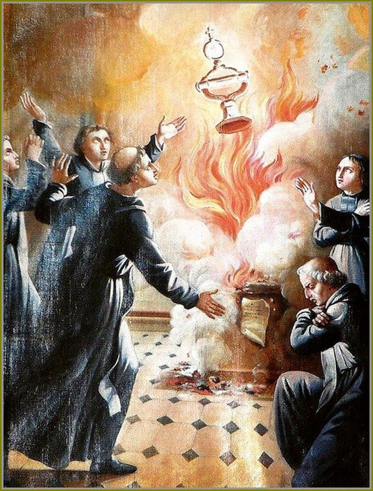
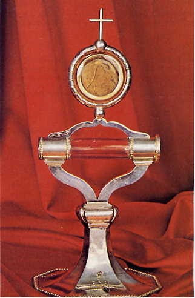
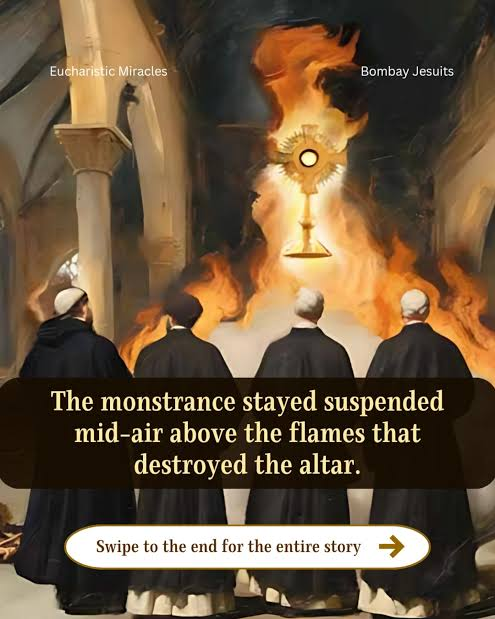

The 1608 Eucharistic Miracle of Faverney is a recognized event in Catholic history where a monstrance containing two consecrated Hosts remained suspended in mid-air for 33 hours, completely unharmed, after a massive fire destroyed the altar.
What Survived: The heat was so intense that it melted a chandelier, yet the monstrance, the two Hosts (which sustained only slight scorching), and four sacred artifacts contained within the monstrance were left undamaged.
Official Recognition: Following a canonical investigation, the Archbishop of Besançon officially declared the miracle authentic on July 30, 1608.
Current Status: One of the two Hosts was later transferred to the town of Dole, where it was unfortunately destroyed during the French Revolution. The second Host remained in Faverney.
You can still venerate the surviving Host today. It is kept in a replica monstrance at the abbey church in Faverney, which remains a destination for Catholic pilgrims and those exploring French religious heritage.